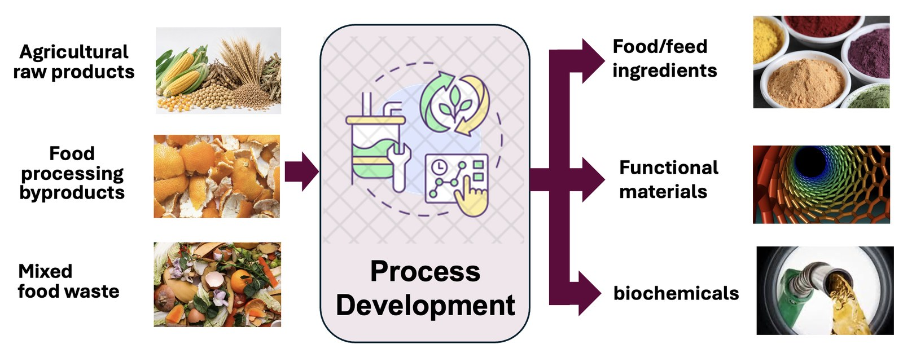

Research Approach
We develop scalable approaches to transform food and agricultural resources into functional ingredients, biomaterials, and biochemicals for a more circular bioeconomy.

Where Our Researchers Go
Huang Lab researchers develop interdisciplinary expertise spanning food science, bioprocessing, separations, analytical science, and process systems engineering—and use that training to build careers across academia, national laboratories, advanced research, and industry.
Academia
Faculty positions
- University of Maine
- Kansas State University
- Tennessee State University
- Virginia Tech
National Labs
Research positions
- Lawrence Berkeley National Laboratory
- USDA Agricultural Research Service (ARS)
Industry R&D
Scientists & technologists
- Thermo Fisher Scientific
- BASF
- Ingredion
- Louis Dreyfus Company
Advanced Training
Graduate & postdoctoral study
- UC Davis
- Cornell University
- The Ohio State University
Group News
The five most recent updates from the lab — see the full archive for more.